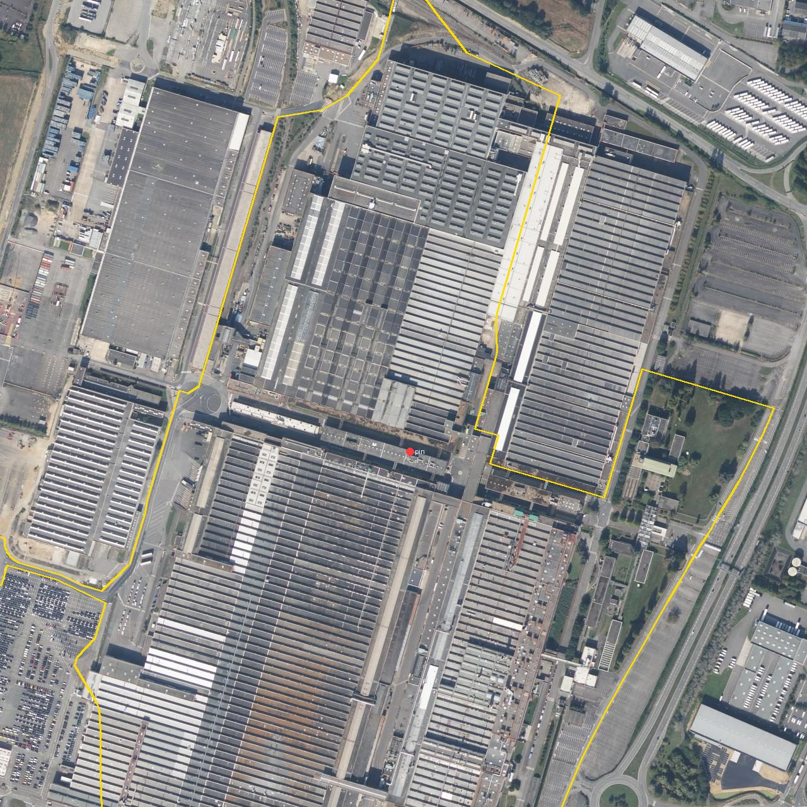

Site research · verified 18 to 21 October 2026 by two independent passes
The brief's coordinates, 48.060095, −1.706889, fall inside an operating car plant. The plan leaves it untouched and takes three empty lots on its western side: one in the public ZAC La Janais, two the factory's owner would release. Every number below carries its source; what could not be checked is listed at the end.
Cadastral parcel 35066000AB0097, section AB no. 97, 63.6 ha, Chartres-de-Bretagne, entirely covered by factory buildings. The campus takes three empty lots to its west, with no buildings. AC 0705 lies inside the public ZAC La Janais (created by Rennes Métropole on 5 April 2018, run under a development concession until 2032) and is zoned UO4 in the PLUi: it is a plot to be bought from the ZAC's developer, and what UO4 allows is confirmed with Rennes Métropole. AC 0541 and AC 0710 lie outside the ZAC, are zoned UI1j like the factory, and would be released by the factory's owner.
| Lot | Area | Position from the project's coordinates |
|---|---|---|
| AC 0541 | 4.4 ha | 970 to 680 m west, 45 to 330 m south |
| AC 0705 | 5.5 ha | 1,060 to 745 m west, 420 to 690 m south |
| AC 0710 | 6.1 ha | 785 to 530 m west, 400 to 800 m south |
What goes where: AC 0541, the lot nearest the houses, becomes a public park of 3.7 ha, reached by the service road that rings it and a track from its north-west corner towards the D177 (public access subject to the factory owner and Rennes Métropole); the rail strip at its southern tip, about 0.6 ha, stays with the railway. Everything built is on AC 0705: the station in its north-east corner, the point furthest from homes on both sides, the three buildings on its west side, the battery in its south-east corner. AC 0710 holds no building. Also on the site: AB 0088 (6.6 ha) and AB 0089 (10.4 ha) to the north-west, built. AB 0106 is the rail depot, not available. Ownership and surplus status of AC 0541 and AC 0710 to confirm with the owner. Sources: IGN cadastre and Géoportail de l'urbanisme via apicarto; Rennes Métropole open data (ZAC perimeters); OpenStreetMap reverse geocoding.

Measured wall to boundary: IGN BD TOPO residential buildings against the cadastral lots and the site-plan footprints, checked on the May 2026 IGN aerial, to about 10 m. Homes lie both north and south of the lots.
| Place | Distance | Note |
|---|---|---|
| Rue de la Pommerais, Saint-Jacques-de-la-Lande | 200 m from the park lot; 560 m from the nearest building; 640 m from the station | 48.0612, −1.7216 (65 rue de la Pommerais); the nearest house to the lots, at the edge of the Saint-Jacques estate to the north-west |
| Le Bois Noir, Chartres-de-Bretagne | 370 m from the lots; 400 m from the nearest building; 530 m from the station | 48.0531, −1.7258 (14 le Bois Noir); the nearest house to a campus building, south-west, where the noise meter goes |
| Les Queniaux, Chartres-de-Bretagne | 430 m from the lots; 440 m from the nearest building; 520 m from the station | 48.0508, −1.7231 (8 les Queniaux) and 48.0504, −1.7220 (4 les Queniaux); the nearest houses to the station, to the south |
| La Monnerie, Chartres-de-Bretagne | 500 m from the lots; 580 m from the nearest campus footprint; 630 m from the station | 48.0487, −1.7181 (2 la Monnerie), to the south |
| Rue du Manoir, Saint-Jacques-de-la-Lande | 650 m from the park lot; 1 km from the nearest building | 48.0652, −1.7173 (52 rue du Manoir); the view from the D177 verge here is drawn before anything is built |
| La Chaîne, Noyal-Châtillon-sur-Seiche | About 1.4 km | 48.0626, −1.6976, the nearest house (41 la Chaîne); 260 m from the factory parcel's edge, which the earlier plan used |
| École Eugène Pottier | About 900 m from the lots, 1.3 km from the nearest building | Primary school, Saint-Jacques-de-la-Lande, inside the charter zone; 1.6 km from the construction route. All school distances are straight lines from the IGN point of interest. |
| École maternelle Brocéliande, Chartres-de-Bretagne | About 850 m from the construction route | The nearest school to the D34 approach; the construction air monitor goes here as well as at Pottier. |
| Homes along the D34 approach, Chartres-de-Bretagne | 45 m from the construction route | About 230 homes within 300 m of the D34 (derived from IGN BD TOPO buildings); covered by the charter's construction clauses |
Homes are the 2,618 residential buildings in IGN BD TOPO within about 2.5 km, named with the national address base's reverse geocoder on 22 October 2026. About 925 dwellings lie within 1 km of the lots (derived from BD TOPO). The charter zone is the nearest streets, within about 1 km of the lots.
"Poste électrique La Janais" touches the parcel edge about 740 m south-west of the pin, with 90 kV lines to Noyal and to Belle-Épine via Bruz. No 225 or 400 kV source within 3 km: a 100 MW import would have needed grid reinforcement; an export of up to 80 MW may fit the 90 kV substation. RTE to confirm.
An 8 MW biomass boiler built and run for the industrial site under a 15-year contract: first stone October 2023, start-up 2024, a 3 km network, 11 substations, about 30 GWh a year (ENGIE says about 3,000 homes; about 2,000 gas-heated homes at the 14 MWh used on this site), €13.5M of works with €3.5M from ADEME. The incubator building, Bâtiment 78, is connected to it; the school energy lab and the free community room go there, subject to Rennes Métropole.
Rennes airport's boundary is 1.2 km from the project's coordinates; the main runway (10/28, 2,100 m) about 1.4 km. The servitude plan of December 2021 caps obstacles at 83.1 m NGF, 45 m above the 38.1 m reference, on the inner horizontal surface. Which surface covers the lots is for DGAC and SNIA to confirm; the buildings at 20 m and stacks at 25 m sit well under either.
The D837 runs east of the parcel, the D177 north-west past the houses, the N137 (Rennes–Nantes) east with its exit at the Pôle Sud roundabout, and the D34 along the south of the site through the ZI de la Motte. That is the construction route. The industrial site already runs on gas; GRTgaz supply at about 270 to 450 MWth to confirm (derived from the energy page's gas figures).
Sources: OpenStreetMap and IGN BD TOPO (post, lines, roads); ENGIE Solutions press release, 25 October 2023; Unidivers on Bâtiment 78; LFRN servitude note (Châteaugiron annex).
About 31,000 people around the site. The pin is in Chartres-de-Bretagne; the nearest houses are in Saint-Jacques-de-la-Lande.
| Commune | Population | Housing |
|---|---|---|
| Chartres-de-Bretagne | About 8,900 | Mostly houses, owner-occupied |
| Saint-Jacques-de-la-Lande | 13,800 (INSEE) | Mostly apartments, renters |
| Noyal-Châtillon-sur-Seiche | 8,359 (INSEE) | Half houses, 57% owners |
New municipal councils were elected in March 2026 (Noyal-Châtillon-sur-Seiche: Sébastien Gueret, 77% in the first round, per datan.fr); Chartres-de-Bretagne: David Le Borgne; Saint-Jacques-de-la-Lande: Sébastien Collet (both first on the elected lists on the Interior Ministry's results pages). Rennes Métropole is presided by Nathalie Appéré, mayor of Rennes. Rennes Métropole wants the wider La Janais site "rich in jobs and poor in carbon": a 53 ha industrial development, the Bâtiment 78 incubator (25,000 m², opened April 2025) and other buildings, with a public consultation under way whose goals include soil treatment and groundwater protection. Zero net land take (ZAN) makes brownfield reuse a political asset.
A 100 MW campus with its own plant needs the full procedure. The four weeks run in front of it.
Zoning. The built lot, AC 0705, is UO4 in the Rennes Métropole PLUi (règlement of 17 September 2026) and lies inside the ZAC La Janais, so the ZAC's rules and Rennes Métropole's developer shape what can go there. The factory, the park lot and AC 0710 are UI1j, an industrial activity zone with height, biotope, permeability and OAP overlays. A permis de construire from Rennes Métropole.
ICPE. Combustion is rubrique 2910 (déclaration from 1 MWth, enregistrement from 20 MWth) and 3110 at 50 MWth and above, which means autorisation environnementale, a full environmental assessment and a public inquiry; plus 4734 (fuel) and 4802 (refrigerants).
CNDP. Décret 2021-1000 sets the "équipements industriels" thresholds at €600M (mandatory referral) and €300M (publication). Data centers are not named; applicability is an interpretation. A December 2024 draft decree proposed deleting the category but has not appeared in the Journal officiel.
Loi 2026-403 (26 May 2026, article 35): a data center can be designated a project of major national interest by decree, but the State can only change the local plan to fit it with the agreement of the mayor or the EPCI president (Maire-info, 23 September 2026); the préfet then issues the permit, and may refuse one where water is under structural stress. Some implementing decrees are still pending.
Each is labelled derived or to confirm wherever it appears.